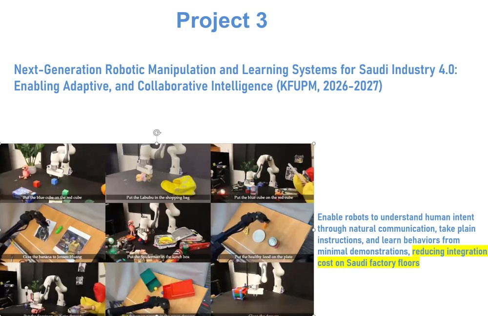
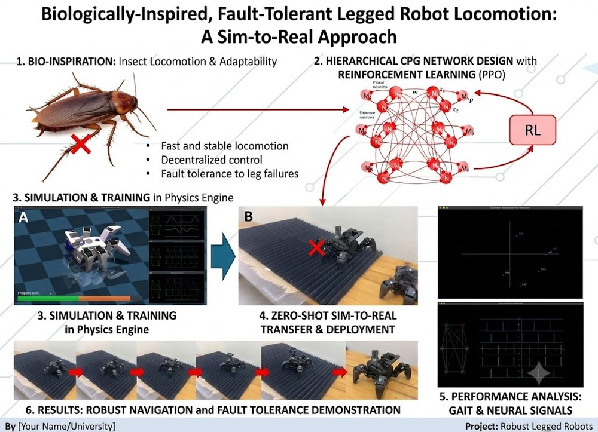
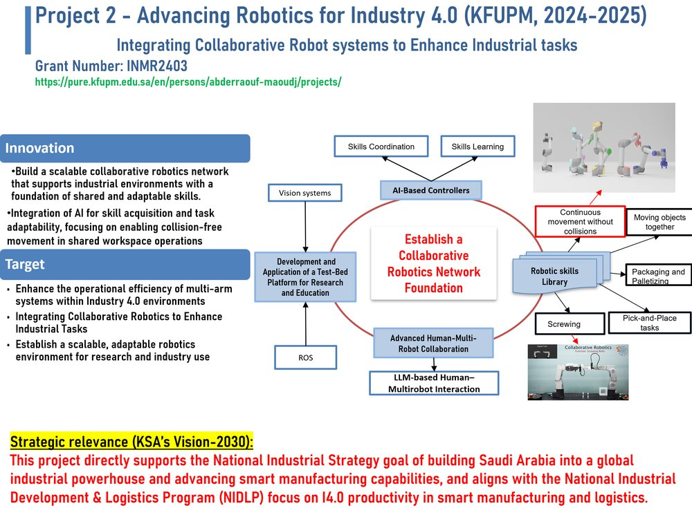
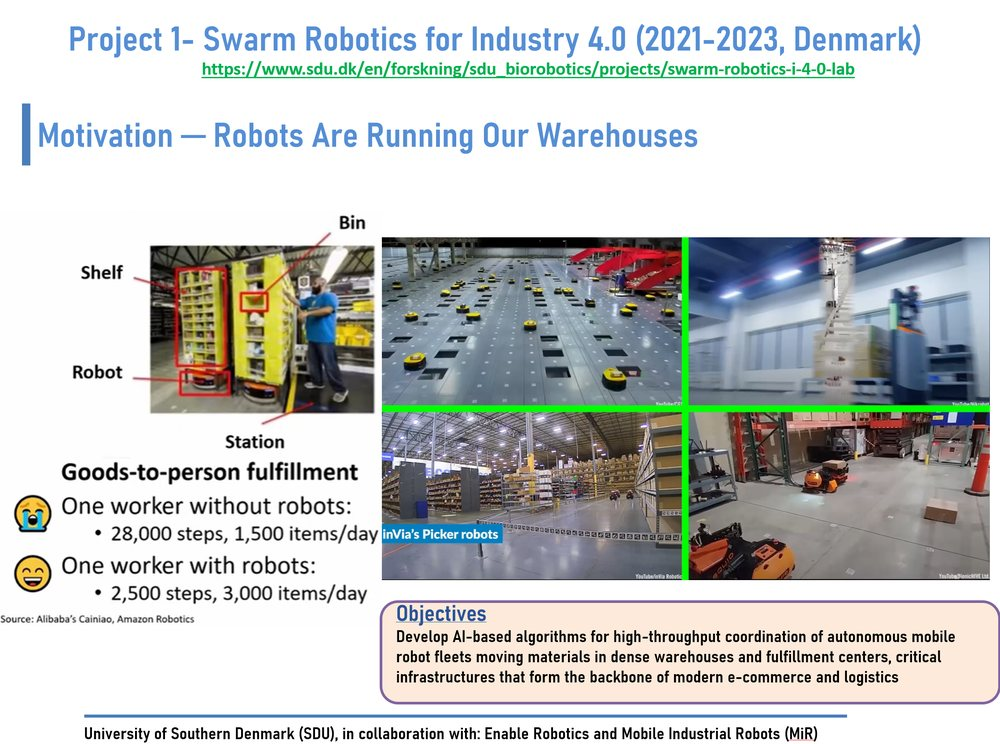

Abderraouf Maoudj
I'm a senior robotics researcher and Post-Doctoral Research Fellow at the Interdisciplinary Research Center for Intelligent Manufacturing and Robotics (IRC-IMR), KFUPM. My work builds learning-based robotic systems that can be instructed, taught, and coordinated rather than manually programmed — integrating vision–language–action (VLA) models, world-model-based reinforcement learning, imitation learning, and decentralized multi-agent coordination. With more than a decade of academic and industrial R&D across Denmark, Algeria, and Saudi Arabia, I focus on methods that move beyond simulation into large-scale deployment in dynamic warehouses, factories, and smart-manufacturing settings, where scalability and adaptability are the core challenges.
My current research centers on three directions:
- Next-generation robotic manipulation and learning: learning skills from minimal human or video demonstration and refining policies offline with learned world models, with a particular focus on how high-level operator commands can be translated into effective, optimized robot actions.
- Multi-robot planning and coordination: enabling swarms of autonomous robots to distribute tasks in a decentralized manner, collaborate toward individual and shared goals, and adapt to changing conditions, with particular application to fleets of drones and mobile robots — letting large teams of robots make local decisions that yield globally efficient, robust behavior in uncertain environments.
- Resilient legged locomotion: bio-inspired CPG dynamics modulated by reinforcement learning to sustain performance under progressive hardware faults.
Research & Selected Projects

Ongoing · 2026–2027Next-Generation Robotic Manipulation and Learning Systems for Saudi Industry 4.0
Enable robots to understand human intent through natural communication, take plain instructions, and learn behaviours from minimal demonstrations — combining generative reinforcement learning, vision–language–action models, and world models to reduce integration cost on Saudi factory floors.

OngoingBiologically-Inspired, Fault-Tolerant Legged Robot Locomotion: A Sim-to-Real Approach
A hierarchical CPG network trained with reinforcement learning (PPO) for fast, stable, decentralized locomotion with fault tolerance to leg failures. Trained in a physics engine and transferred zero-shot to an 18-DoF hexapod, with robust navigation on flat and structured uneven terrain.

2024–2025Advancing Robotics for Industry 4.0 — Integrating Collaborative Robot Systems to Enhance Industrial Tasks
Build a scalable collaborative-robotics network founded on shared, adaptable skills — AI-based controllers for skills coordination and learning, vision systems, and LLM-based human–multi-robot interaction — advancing multi-arm Industry 4.0 operations in line with KSA Vision 2030.
Project page
2021–2023Swarm Robotics for Industry 4.0
AI-based algorithms for high-throughput coordination of autonomous mobile-robot fleets in dense warehouses and fulfilment centres — decentralized multi-agent path finding, capacitated multi-AGV scheduling, and lifelong MAPF — scaling to thousands of robots in dynamic environments.
Project pageTeaching & Mentorship
My teaching journey began during my PhD, assisting in core courses in robotics, AI, electronics, and automation. As a Senior Researcher I supervised Master's projects in robotic manipulation, mobile navigation, and control integration — reinforcing my conviction that hands-on experience is critical to mastery. I integrate tools such as MATLAB/Simulink, ROS, Python, PyBullet, MuJoCo, and robotic platforms (e.g., UR5, Meca500) into lab-driven modules, and emphasise learning through open-ended design challenges, problem-based projects, simulation-to-reality pipelines, and iterative prototyping — encouraging students to defend their design choices and reflect on system behaviour.
Invited Seminars, Lectures & Outreach
-
Reinforcement Learning in Robotics: From Mathematical Foundations to Real-World Applications
Invited lecture, Department of Electrical Engineering, KFUPM — November 2025. LinkedIn post -
Decentralized Multi-Robot Motion Planning & Coordination for Industrial Applications
Invited seminar, University of Tartu, Estonia — September 2024. LinkedIn post
-
Multi-Robot Motion Planning & Coordination in Industrial Environments
Co-organized & presented — IRC-IMR Annual Research Workshop, DTV, KFUPM — August 2024. Workshop page -
IRC-IMR Robotics activities · Vision 2030 research strategy
2024 KFUPM Research Forum — October 2024. Research Forum
Experience
- Lead research on adaptive control and learning for next-generation robotic manipulation, including VLA models, world-model RL, and imitation learning.
- Established a collaborative-robotics testbed and a Collaborative Robotics Network Framework with closed-loop control for rapid, low-configuration cobot deployment.
- Develop AI-driven methods for high-throughput coordination of autonomous mobile-robot fleets in dense warehouses supporting KSA e-commerce and logistics.
- Supervise Master's students and research interns; several projects reached publications, industrial demos, or technology prototypes.
- AI-based distributed multi-robot coordination for large-scale e-commerce logistics (project: Swarm Robotics for Industry 4.0, with Enable Robotics).
- Decentralized multi-agent path finding, capacitated multi-AGV scheduling, and swarm robotics in dynamic warehouses; frameworks scaling to >3,000 robots.
- Co-supervised Master's projects emphasizing reproducible experimentation, benchmarking, and open-source software.
- R&D on robotics and automation for smart manufacturing: scalable integration of collaborative arms, AGV fleets, PLC-based automation, and intelligent scheduling into Industry 4.0 cyber–physical assembly cells.
- Delivered core engineering courses and supervised multiple Master's theses in robotic manipulation, industrial automation, and autonomous navigation.
Publications 49 entries
Journal papers, conference proceedings & preprints. Live metrics on Google Scholar.

Scientific Reports, 2026.
Hardware experiments: the robot demonstrates omnidirectional movement — walking in sagittal, coronal, and rotational directions — and maintains stable locomotion on flat ground and structured uneven terrain, indicating that the control decomposition is robust to moderate contact variability.
IEEE Access, vol. 14, pp. 74923–74932, 2026.
Journal of Ambient Intelligence and Smart Environments, vol. 18, no. 1, pp. 41–67, 2026.
The International Journal of Advanced Manufacturing Technology, 2026.
Results in Engineering, art. 109805, 2026.

Robotics and Autonomous Systems, Elsevier, 2025
vol. 12, pp. 1652426, 2025.

Applied Intelligence, vol. 55, no. 12, pp. 873, 2025.

Swarm and Evolutionary Computation, vol. 93, pp. 101833, 2025.
2024 4th International Conference on Embedded & Distributed Systems (EDiS), pp. 193-198, 2024.

Swarm Intelligence, vol. 18, no. 2, pp. 167-185, 2024.

2024.

Sci. Technol, vol. 27, no. 1, pp. 21-36, 2024.
2024 IEEE 20th International Conference on Automation Science and Engineering (CASE), pp. 10.1109/CASE59546.2024.10711327, 2024.

2023 21st International Conference on Advanced Robotics (ICAR), pp. 28-34, 2023.

2023.
Robotics and Computer-Integrated Manufacturing, vol. 81, pp. 102514, 2023.

vol. 56, no. 4, pp. 3369-3444, 2023.
pp. 104-116, 2022.
Swarm Intelligence: 13th International Conference, ANTS 2022, Málaga, Spain, November 2–4, 2022, Proceedings, vol. 13491, pp. 104, 2022.
International Journal of Artificial Intelligence and Soft Computing, vol. 7, no. 4, pp. 329-352, 2022.
2021 26th IEEE International Conference on Emerging Technologies and Factory Automation (ETFA), pp. 1-8, 2021.
2021 IEEE 17th International Conference on Automation Science and Engineering (CASE), pp. 1338-1345, 2021.
1st National Conference on Applied Computing and Smart Technologies. Ecole Supérieure en Informatique, Sidi Bel Abbès, Algeria. Available at: https://www. researchgate. net/publication/353165007_Multi-Agent_Control_of_an_Industry_40_Cyber-physical_Assembly_Cell (accessed 11 December 2021), 2021.
Applied Soft Computing, vol. 97, no. 2020, 2020.
Algerian Journal of Signals and Systems, vol. 4, no. 2, pp. 39-50, 2019.
The International Conference on Networking Telecommunications, Biomedical Engineering and Applications (ICNTBA 2019), 2019.
vol. 33, no. 15-16, pp. 764-799, 2019.
International Conference on Networking Telecommunications, Biomedical Engineering and Applications (ICNTBA 2019), 2019.
International Journal of Imaging and Robotics, vol. 19, no. 03, 2019.
International Journal of Systems, Control and Communications, vol. 10, no. 2, pp. 95-125, 2019.
2018 International Conference on Applied Smart Systems (ICASS), pp. 1-7, 2018.
2018.
International Journal of Uncertainty, Fuzziness and Knowledge-Based Systems, vol. 26, no. 5, pp. 809, 2017.
Journal of Intelligent Systems, 2017.
Robotics and Autonomous Systems, vol. 89, pp. 95-109, 2017.
2017.
The 5th International Conference on Electrical Engineering – Boumerdes (ICEE-B) , Boumerdes, Algeria., no. 978-1-5386-0686-5/17/$31.00 ©2017 IEEE, 2017.
Journal of Intelligent Manufacturing, vol. 30, no. 4, pp. 1629–1644, 2017.
pp. 67-72, 2016.
IECON 2016-42nd Annual Conference of the IEEE Industrial Electronics Society, pp. 692-697, 2016.
2016.
2015 IEEE 13th international conference on industrial informatics (INDIN), pp. 179-184, 2015.
pp. 38-43, 2014.
No publications match your search.
Education
Ph.D. in Process Control & Robotics — University of Sciences and Technology Houari Boumediene (USTHB)2013–2018
- Thesis: Remote Control of a Heterogeneous Multi-Robot System — application to the RobuTER/ULM and AGV-M6 platforms.
M.Sc. in Electronics & Control — Mohamed Seddik Ben Yahia University, Jijel2010–2012
- Thesis: Design and Realisation of a Mobile Robot.
B.Sc. in Electrical Engineering — Mohamed Seddik Ben Yahia University, Jijel2007–2010
- Capstone: Development of a Card Reader.